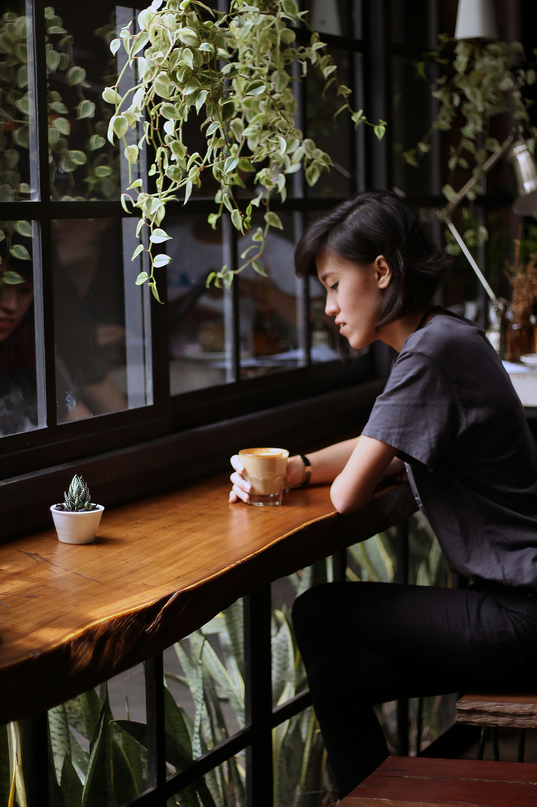
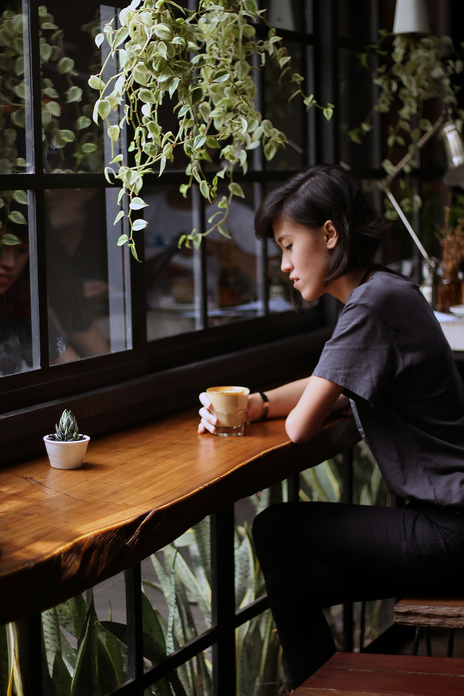

About us
Founded in 1999,kohi began as a dream shared by passionate coffee enthusiasts in kochi. What started as a humble corner café quickly grew into a beloved community hub, where locals and visitors alike gather to savor exceptional coffee and forge meaningful connections. From our early days sourcing the finest beans from around the globe to perfecting our brewing techniques, we've remained dedicated to quality and craftsmanship. Over the years, we've expanded our menu to include a delightful array of pastries and treats, all crafted with the same care and attention to detail as our coffee.


 
